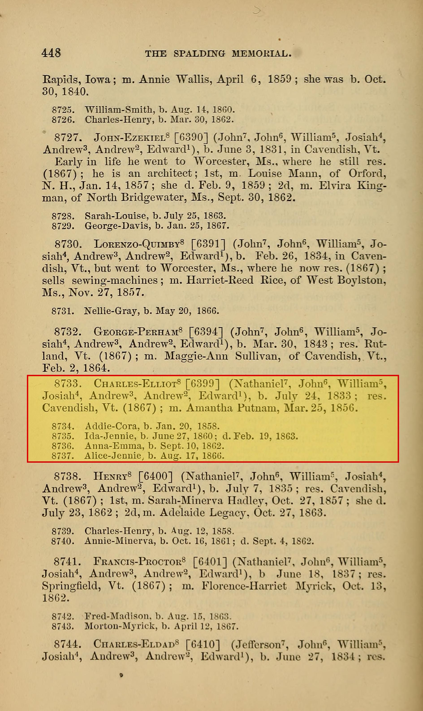
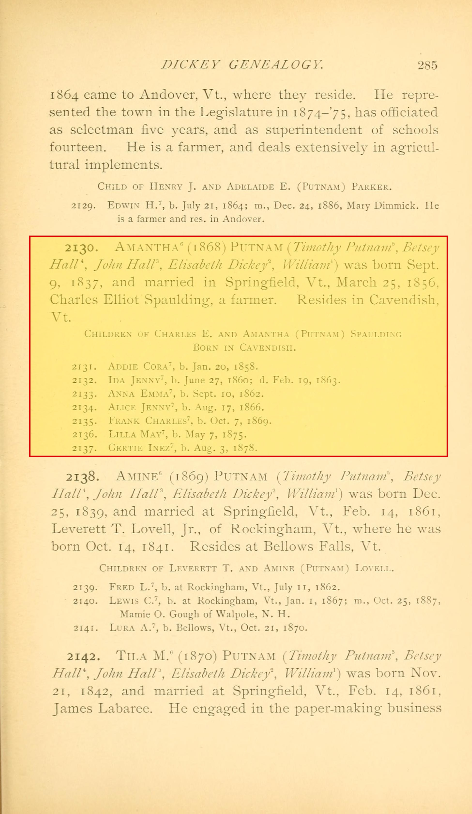

Spaulding and Putnam
Spaulding and Putnam
Alice Jenny (Spaulding) Magwire was a daughter of Charles Elliot Spaulding and Amantha (Putnam) Spaulding. Two printed family histories, close to their own lifetimes, give the marriage and the children's births. The generations behind those books are still leads, so they are not drawn.
Charles and Amantha
Charles Elliot Spaulding was born on July 24, 1833. He married Amantha Putnam in Springfield, Vermont, on March 25, 1856. They farmed in Cavendish. Charles died on March 26, 1890, and Amantha on May 30, 1926, at Proctorsville. Both are buried in Cavendish Village Cemetery. The children named in the histories include Addie Cora, Ida Jenny, Anna Emma, Alice Jenny, Frank Charles, Lilla May and Gertie Inez. Alice Jenny, born August 17, 1866, is the daughter this site follows. She married Albert A. Magwire. Their story is on the Magwire page.
Amantha was born on September 9, 1837. The Dickey Genealogy of 1898 calls her a daughter of Timothy Putnam and Betsey Hall, and it gives Betsey a birth on May 26, 1784. The Spalding Memorial of 1872 names Nathaniel Spalding as Charles's father and carries a pedigree back toward Edward Spalding. Those earlier people are leads from compiled genealogies. They are not on the tree.

